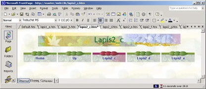

3 Membuat Link Bar berdasarkan Struktur
Jadi begitulah pemakaian Web Component untuk membuat link bar, baik custom
maupun Back-Next.
Kalau Anda perhatikan, pembuatan link bar sangat tergantung dengan struktur
halaman.
Jika Anda menggunakan situs dengan banyak halaman, maka akan lebih mudah jika
Anda memanfaatkan fasilitas terakhir yang disediakan FrontPage XP dalam
membuat link bar, yaitu dengan menggunakan struktur.
Langkah yang diperlukan adalah:
1. Buatlah situs web baru, misalnya web13b. Caranya: aktifkan File à New Page
or Site. Lalu klik ganda One Page Web. Lihat Gambar 13.45.
Gambar 13.45 Pembuatan situs web13b
2. Setelah terbentuk web tersebut, tampilkan mode Navigation. Caranya: klik icon
Navigation di bidang kiri.
3. Buatlah lapis pertama di bawah Home Page (klik kanan dan pilih New è
Page), misalnya lapis pertama ini terdiri dari dua halaman bernama Lapis1_a ,
Lapis1_b dan .
4. Buatlah lapis kedua di bawah Lapis1_a, misalnya dua halaman bernama
Lapis2_c dan Lapis2_d.
5. Kemudian buatlah lapis kedua juga namun di bawah Lapis1_b, misalnya dua
halaman bernama Lapis2_e dan Lapis2_f. Hasilnya seperti Gambar 13.46.
Gambar 13.46 Susunan web13b
6. Klik ganda Home Page, sehingga terbuka.
7. Terapkan tema Balance untuk seluruh halaman di dalam situs. Caranya, pada
kotak dialog Themes aktifkan All page(s) dan Balance. Gambar 13.47.
Gambar 13.47 Aktifkan All page(s) dan Balance
8. Pasangkan banner, Isertè Page Banner. Dan klik Picture serta tuliskan Home
Page. Gambar 13.48.
Gambar 13.48 Pengaturan Page Banner
9. Klik OK, hasilnya seperti Gambar 13.49.
Gambar 13.49 Hasil pengaturan Home Page
10. Bukalah halaman lapis1_a.htm.
11. Pasangkan banner dengan teks nama halaman itu sendiri. Caranya: Isertè Page
Banner. Lalu klik Picture dan tuliskan Lapis1_a.
Gambar 13.50 Pengaturan pege Banner halaman pertama, lapisan pertama
12. Klik OK, hasilnya akan seperti Gambar 13.51.
13. Ulangilah lamgkah di atas untuk halaman selanjutnya (lapis1_b, lapis2_c,
lapis2_d, lapis2_e, lapis2_f, lapis2_g dan lapis2_h).
3.1 Memasang link bar Home Page
1. Aktifkan Home Page.
2. Klik lokasi di bawah Page Banner.
3. Jalankan perintah Insert èNavigation
Gambar 13.52 Pilihan Bar based on navigation structure
4. Pada bidang kiri klik Link Bars , pada bidang kanan klik pilihan Bar based on
navigation structure. Lalu klik Next, muncul pilihan style bar:
Gambar 13.53 Pilihan mengikuti tema
5. Jangan ubah pilihan (menggunakan tema situs), lihat Gambar 13.53. Kemudian
klik Next, muncul pilihan style link bar.
Gambar 13.54 Pilihan style link bar
6. Klik Finish. Muncul kotak dialog yang menampilkan diagram struktur situs,
seperti Gambar 13.55.
Gambar 13.55 Diagram struktur situs
7. Jangan ubah pilihan (Child level), kemudian klik OK. Hasilnya seperti Gambar
13.56.
Gambar 13.56
8. Pada Home Page muncul Link bar dengan dua tombol berjudul Lapis1_a dan
Lapis1_b. Lihat Gambar 13.56. Jika posisinya tidak tepat ditengah, Anda bisa
menggunakan tombol Center pada toolbar Formatting untuk membawanya ke
tengah.
9. Cobalah jalankan di browser, tampilannya seperti Gambar 13.57.
Gambar 13.57 Home Page tampil di browser
Perhatikan, kalau kursor Anda tempatkan tepat di atas tombol, maka gambarnya
akan berubah yang menandakan bahwa tombol tersebut sedang tersorot.
Jika Anda menempatkan kursor selama beberapa saat, maka akan muncul hint, yaitu
keterangan singkat yang dikaitkan dengan tombol tersebut.
Klik masing-masing tombol, akan membuka halaman yang bersesuaian. Misalnya
tombol Lapis1_a akan membuka halaman Lapis1_a, seperti Gambar 13.58.

Gambar 13.58 Tampilan Lapis1_a
3.2 Membuat link bar lapisan pertama
Nah kini saatnya untuk membuat link bar bagi lap;isan pertama.
1. Bukalah salah satu halaman di lapisan 1, misalnya lapis_1a.
2. Klik lokasi tepat di bawah Page Banner, klik Center untuk menengahkan
letaknya.
3. Jalankan perintah Insert è Navigation
4. Kiri Link Bars, kanan Bar based on navigation structure. Lalu klik Next, muncul
pilihan style bar:
5. Jangan ubah pilihan (menggunakan theme situs), klik Next. Muncul pilihan
posisi link bar.
6. Jangan ubah pilihan horizontal, klik Finish. Muncul kotak dialog Link Bar
Properties untuk memilih jenis tombol.
Gambar 13.59 Kotak dialog Link Bar Properties
7. Selain pilihan Child Level, klik pilihan Home Page. Lihat Gambar 13.59. Icon
halaman yang terpilih pada diagram akan berwarna biru tua.
8. Klik OK, hasilnya pada halaman akan tampak pada Gambar 13.60.
Gambar 13.60 Tombol muncul pada halaman
9. Ulangi langkah di atas untuk halaman Lapis1_b.
3.3 Membuat link bar lapisan kedua
Sekarang saat membuat navigasi untuk halaman lapisan kedua, kita mulai dari
halaman Lapis2_C.
1. Aktifkan halaman tersebut.
2. Klik lokasi tepat di bawah Page Banner, klik Center untuk menengahkan
letaknya.
3. Jalankan perintah Insert è Navigation
4. Kiri Link Bars, kanan Bar based on navigation structure. Lalu klik Next, muncul
pilihan style bar:
5. Jangan ubah pilihan (menggunakan theme situs), klik Next. Muncul pilihan
posisi link bar.
6. Jangan ubah pilihan horizontal, klik Finish.
Gambar 13.61 Pilihan jenis struktur
7. Pilihlah Same Level dan Home Page dan Parent Home.
8. Klik OK, hasilnya seperti Gambar 13.62.

Gambar 13.62 Tombol muncul di halaman
9. Perhatikan untuk “naik” ke lapisan atasnya (Parent Level), FrontPage XP
menggunakan tombol Up. Berarti itu link ke halaman Lapis1_a yang merupakan
induk halaman Lapis2_c ini.
10. Jangan lupa menyimpan hasil pemasangan ini.
11. Ulangi langkah di atas untuk halaman Lapis2_d dan Lapis2_e.
3.4 Membuat tombol Next dan Back
Setelah membuat tombol untuk link turun-naik, kini kita akan menyusun tombol
untuk link horisontal, yaitu Next dan Back.
Langkah yang diperlukan adalah:
1. Kemudian untuk anak-anak dari Lapis1_b, kita akan menggunakan tombol
Next dan Back. Bukalah halaman Lapis2_f
2. Klik lokasi tepat di bawah Page Banner, klik Center untuk menengahkan
letaknya.
3. Jalankan perintah Insert è Navigation
4. Kiri Link Bars, kanan Bar based on navigation structure. Lalu klik Next, muncul
pilihan style bar:
5. Jangan ubah pilihan (menggunakan theme situs), klik Next. Muncul pilihan
posisi link bar.
6. Jangan ubah pilihan horizontal, klik Finish.
Gambar 13.63 Pilihan Back and Next, Home Page dan Parent page
7. Pilihlah Same Level dan Home Page dan Parent Home.
8. Klik OK, hasilnya:
Gambar 13.64 Tombol Home, Up dan Next
9. Perhatikan Gambar 13.64 di atas, untuk “naik” ke lapisan atasnya (Parent Level),
FrontPage XP menggunakan tombol Up. Berarti itu link ke halaman Lapis1_a
yang merupakan induk halaman Lapis2_c ini.
10. Jangan lupa menyimpan hasil pemasangan ini.
11. Ulangi untuk halaman Lapis2_g, dan Lapis2_h.
Setelah semuanya terpasang, Anda bisa mencobanya di browser (klik tombol
Preview in Browser), akan seperti Gambar 13.65.
Gambar 13.65 Halaman Home Page di browser
Kalau Anda klik tombol Lapis1_a maka halaman anak pertama akan ditampilkan
seperti Gambar 13.66. Kini Anda turun ke lapisan pertama.
Pada halaman ini terdapat tombol Home untuk mengakses Home Page dan tomboltombol
untuk mengakses halaman lapisan kedua, yaitu anak-anaknya. Perhatikan
bahwa memang tidak disediakan akses ke halaman yang bukan anaknya.
Gambar 13.66 Halaman anak pertama
Kalau Anda klik salah satu tombol anak maka muncul halaman cucu atau halaman
lapis kedua, misalnya Lapis2_c yang merupakan cucu pertama.
Anda kini turun di lapisan kedua atau lapisan paling bawah di dalam situs ini.
Gambar 13.67.
Gambar 13.67Halaman pertama lapisan kedua
Pada lapisan terbawah ini Anda bisa kembali Home Page dengan klik tombol Home.
Untuk naik ke lapisan satu Anda bisa klik tombol Up, yaitu menampilkan induk
halaman ini (Lapis1_a), Anda tidak bisa naik ke halaman Lapis_b sebab bukan
induknya.
Selain itu, pada halaman lapis terbawah ini juga ada tombol yang berwarna lain
(merah, sementara yang lain hijau). Tombol tersebut tidak berfungsi untuk membuka
halaman, namun sebagai penanda halaman ini, perhatikan label tombolnya sama
dengan label Page Banner.
Pada halaman Lapis2_c ini karena tidak memiliki anak, maka hanya tersedia akses
ke saudara-saudaranya, yaitu halaman setingkat namun masih dalam satu induk,
yaitu Lapis2_c, Lapis2_d dan Lapis2_e.
Bagaimana dengan anak kedua (Lapis1_b) dan anak-anaknya (Lapis2_f, Lapis2_g,
Lapis2_h)?
Pada prinsipnya memiliki perilaku yang sama sebab memiliki struktur dan jumlah
yang sama persis dengan kelompok anak pertama yang telah kita bahas di atas.
Baiklah, untuk mengakses kelompok kedua, sebaiknya Anda berangkat dari Home
Page. Klik tombol Home, di manapun Anda sedang berada. Kemudian klik tombol
Lapis1_b, tampilannya seperti Gambar 13.68.
Gambar 13.68 Halaman kedua lapis pertama
Selanjutnya Anda bisa menggunakan tombol yang ada untuk mengakses halamn lain
di dalam kelompknya, misalnya anak pertamanya atau cucu keempat home page.,
yaitu Lapis2_f. Tampilannya seperti Gambar 13.69.
Gambar 13.69 Tampilan halaman Lapis2_f
Copyright © Herlan Lesmana
Created with the Freeware Edition of HelpNDoc: Free HTML Help documentation generator